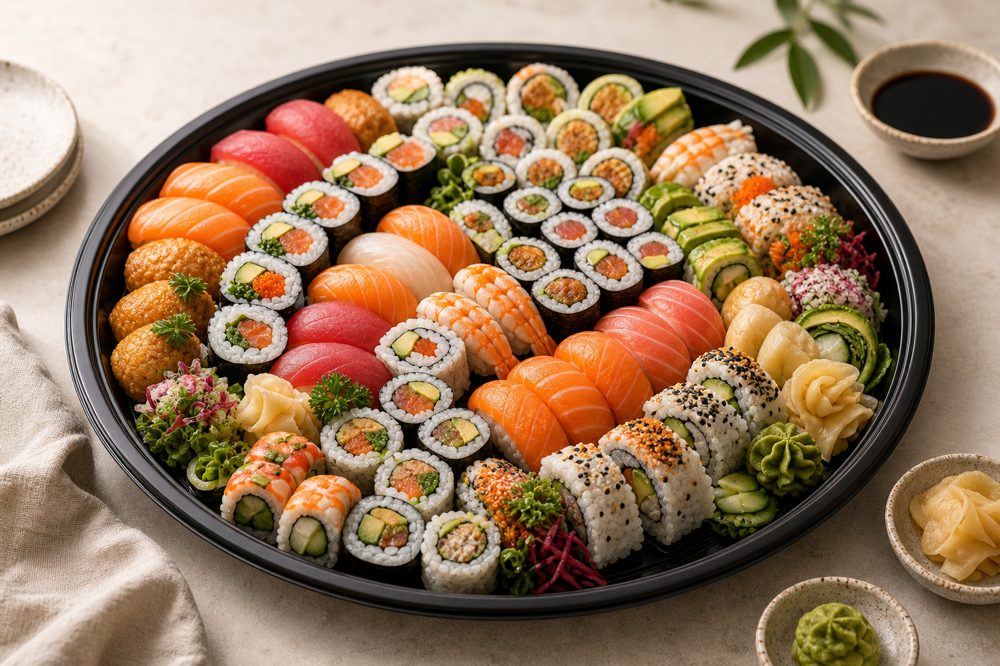

Catering platters
Sushi trays for meetings, parties and shared lunches.
A platter page helps local customers understand what to request before they call: guest numbers, preferred styles, dietary needs and collection timing.

Platter options
Before ordering
Details that help quote accurately.
- Event date, pickup time and suburb.
- Approximate guest count and whether sushi is a snack or full lunch.
- Seafood, chicken, vegetarian and gluten-aware preferences.
- Any allergies or intolerances the shop should know about.
Send a platter enquiry
This sample form opens an email to Goodman SEO and can later be replaced with a real ordering form.